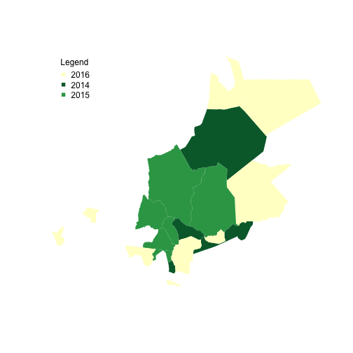
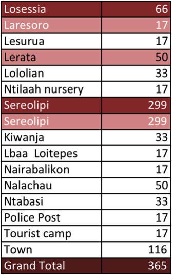

Social CoMMs
Community Based Management and Monitoring System
Deepali Gohil
Map of NRT Conservancies
NRT's Mission Statement
To develop resilient community conservancies that transform lives, secure peace, and conserve natural resources.
Community Conservancies
Lands that are collectively owned and managed by the resident indigenous communities are being set aside for wildlife conservation and sustainable livestock practices.
-The Need
- Frequent Drought
- Sparse Government Services
- Degraded Rangelands and Poor Livestock Production
- Security Issues
- Cattle Rustling
- Ivory Poaching
- Ethnic rivalries
Peace and Security Needed for Livelihood Development, Protection of Wildlife and Growth of the Region.
Management Hierachies

Community Monitoring and Management Systems (COMMS)
- Types
- Wildlife
- Vegetation
- Socio-economic
- Devolved
- Easy to Understand
- Monthly Reporting
- Adaptive Mangement
Adaptive management is a systematic approach for improving resource management by learning from management outcomes.
Piloting Social COMMS
Pilot Conservancies

Progress
Pilot
- 2014
- 4 Conservancies
- Test
- Each NRT County
- ~1200 Households
- 2015
- 6 Conservancies
- Automated Reporting
- 3 levels
- Conservancy & Wards
- County
- NRT
- Seasonal (Wet Season)
Sera Sample

Sampling
- Cluster Sampling
- Probability Proportional to Size
- Census 2009
- Select Sample Size
- NRT Settlement Mapping
- Sample Selection
- Locations/Ward
- Wet Season (June/November)
- 2 Weeks
- Point Person
- Enumerator Selection and Training
- Community Awareness
- Data Collection
- Payments
Enumerator Training and Data Collection

Analysis and Results
Livelihoods
Assets

Analysis and Results
Wildlife: Conflict Types
Security: Conflict Types
Choroplethic Governance Map
Questions?
Who should use the data?
- NRT
- Conservancy Management and Boards
- Government
- Conservation and Development Stakeholders
What should they do with it?
- Action Plans
- Development Plans/Vision
- Monitoring Impact
Action Plans
Use Data
Community and Conservancy Management and Development Plans
- Natural Resources
- Increasing
- Forests
- Rangelands
- Water
- Human Development
- Poverty
- Livelihoods
- Education
- Health
- Security
- Poaching
- Cattle Rustling

Thank You
For more information you can contact:
Deepali Gohil
+254 702 788 055